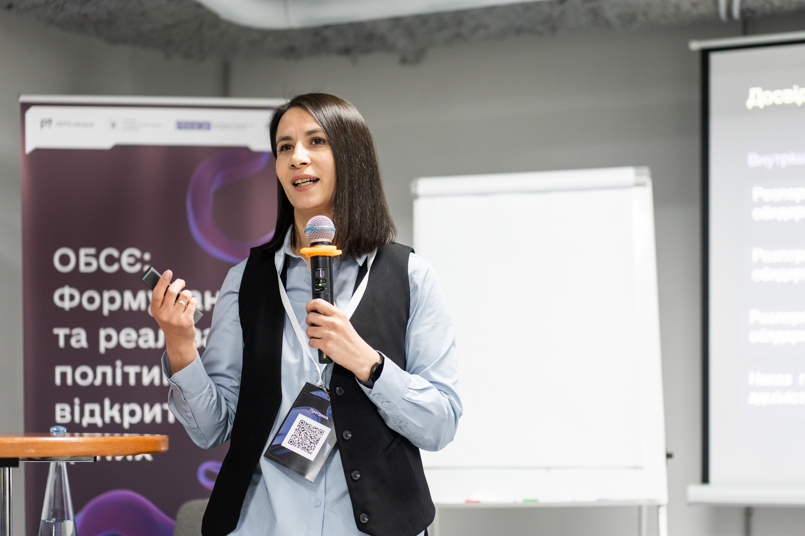
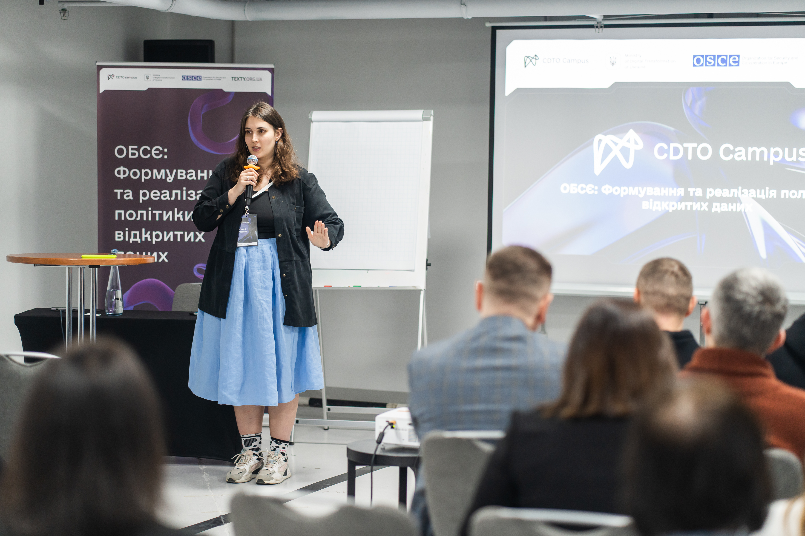
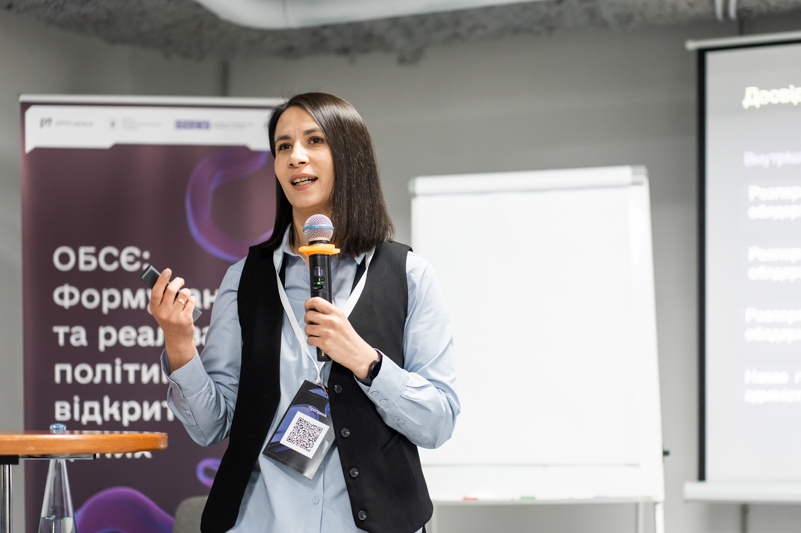
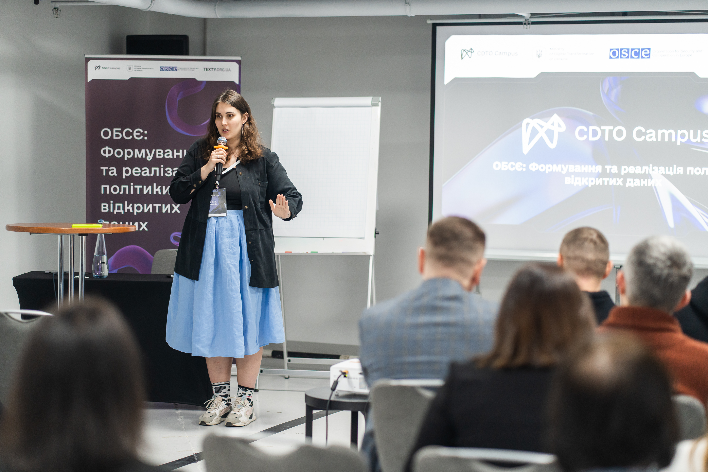

Навчальна програма складається із двох дводенних тренінгів для представників громадськості та бізнесу.
Громадські активісти, журналісти та дослідники під час навчання дізнаються, як можна використовувати відкриті дані для власних досліджень, які перспективи дають відкриті дані для аналізу та як дозволяють забезпечити прозорість прийняття рішень державними органами та органами місцевого самоврядування.Також під час навчання будуть запрошені представники успішних некомерційних проектів на основі відкритих даних, які поділяться власним досвідом.
За результатами учасники знатимуть, які набори даних якісно оприлюднені і придатні для використання, а також розумітимуть, які кроки треба зробити, щоб створити власний успішний проект на основі відкритих даних. Для бізнесу відкриті дані дають широкі перспективи аналізу ринку та конкурентного середовища, дозволяють аналізувати зовнішні ринки для розвитку власного експорту.
Відкриті дані дозволяють автоматизувати бізнес процеси: отримувати інформацію про контрагентів, моніторити державні закупівлі та приватизувати майно. Також відкриті дані можуть використовувати для створення власного стартапу - бізнесу на основі даних.
Під час навчання практики поділяться своїм досвідом, розкажуть про успіхи та невдачі власних проектів. За результатами навчання учасники зрозуміють, які перспективи можуть дати відкриті дані для розвитку бізнесу.


 


